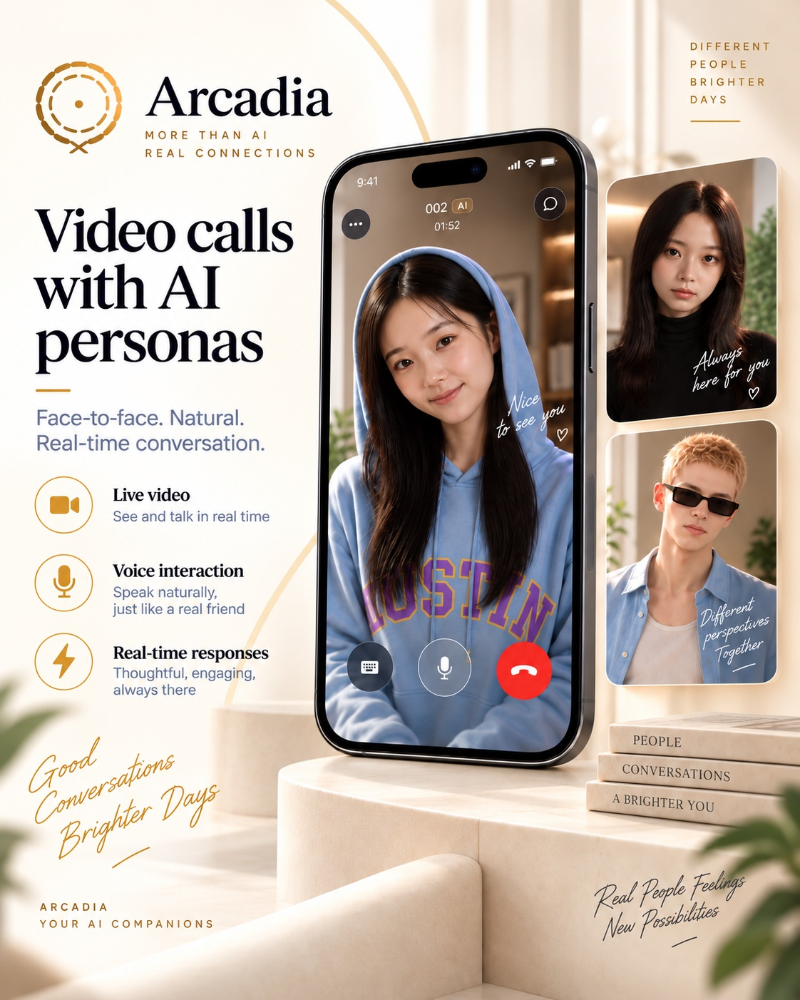

Project
A real-time AI avatar companion platform — mobile client, backend orchestration, and a 5-GPU distributed video generation service, built end to end.
Users train an avatar on their own chat history, photos, and voice. Other users then talk to that avatar by text, voice message, or live video call — where the avatar responds with generated video, not a lip-synced still image.
Source is a private repository. Happy to walk through the code or architecture in an interview.

The interesting constraint is the live call. When a user speaks, the system has ~3 seconds to transcribe speech, moderate it, retrieve memory, generate a reply, synthesize a voice, and render a video of the avatar saying it — then stream that video into a WebRTC room that's already open.
That last step runs on five GPUs in parallel, in a single distributed inference session, streaming frames rather than writing a file. Most of the engineering below exists because of that constraint.
Built the production real-time communication system around an open-source inference engine (see Attribution): the LiveKit integration, cross-process IPC, concurrency safety, and observability that turn a research inference framework into something that survives production traffic.
Performance — Validated and locked in an FP8 quantization + torch.compile configuration, and evaluated H100 vs. H200. Production runs on H200 SXM at ~2.8s per clip, down from a ~3.70s unoptimized baseline (~24% faster), and ~8% faster than the same configuration on H100 (~3.1s).
NCCL collective-op deadlock, fixed at the architectural level. In a 5-rank distributed loop, every rank must call dist.broadcast_object_list the same number of times in the same order, every iteration. A rank-0-only decision placed inside a conditional branch means four ranks block forever waiting for a broadcast that never comes. This class of bug recurred three separate times before I stopped patching instances and fixed the pattern: all rank-0 decisions moved unconditionally to the top of every loop iteration.
Cross-process race on a shared state file. Unlocked read-modify-write access let an already-consumed audio queue entry reappear after deletion, crashing the session with an unhandled FileNotFoundError. Fixed with POSIX file locking and validated under a 200-operation concurrent stress test: 200/200 correct with locking; 178 lost updates and 181 "zombie" entries reproduced without it.
Subprocess pipe deadlock. An FFmpeg call drained stdout but never stderr. Under load, the subprocess blocked writing to a full stderr pipe while the caller blocked reading stdout — a circular wait. Resolved with subprocess.communicate(), which the standard library documents specifically to avoid this.
Observability — Layered diagnostic logging across the full audio/video path (byte-stream receipt, disk I/O, audio slicing, cross-process transport, inference entry), plus a faulthandler hook that dumps a full stack trace automatically when a call hangs. In a 5-process, 5-GPU system, this is the difference between a one-hour diagnosis and a one-day one.
Also fixed: a silent-audio bug where TTS output at 24 kHz was fed to a LiveKit AudioSource fixed at 16 kHz. It only manifested on real speech clips — idle silence happened to already match the fixed rate, so the failure was invisible until someone actually talked.
Avatar creation pipeline. Selfie face verification (ONNX face-recognition model, cosine similarity, in-memory only — no biometric data persisted) → GPT-image-2 portrait stylization → Gemini Omni Flash image-to-video preview → Cartesia voice cloning. Chained as background tasks with independent status tracking the client polls.
Live-call orchestration. A LiveKit Agents worker running as a separate long-lived process with graceful drain-on-shutdown, so deploys don't drop calls in progress. Per turn: Deepgram STT → moderation → concurrent RAG lookups → Gemini reply → Cartesia TTS → GPU render dispatch.
Memory with hard isolation. Three distinct pgvector-backed scopes — per-avatar personality, per-subscriber-pair long-term memory, and per-conversation short-term context — with enforced data isolation so one subscriber's conversation can never surface in another's.
A real computer-vision heuristic, not an API call. Personality training ingests chat screenshots via OCR. Attributing bubbles to the right speaker is the hard part: a two-pass geometric algorithm infers sender vs. recipient from bubble geometry across messaging-app layouts.
Calibrated token economy. Pricing derived from measured RunPod per-second GPU cost, target margin, creator revenue share, and a 14-day earnings hold matched to the IAP refund window — unit economics worked out from real numbers, not placeholders.
Trust & safety. OpenAI moderation on every turn pre-LLM, a second moderation pass on generated action descriptions before they reach the video pipeline, mutual-exclusion blocking (not merely muting), and a manual-review reporting flow.
Model migration under a safety block. Moved a production integration from Google Veo to Gemini's Omni Flash (Interactions API), including diagnosing a content-safety block and resolving it by iterating on both the stylization and video-generation prompts.
21 screens: auth, a paginated discovery feed with autoplaying preview video, real-time text and voice chat, live calls, the full avatar-creation flow (selfie capture, biometric consent, voice cloning, training-source upload), in-app purchases, and a creator earnings/payout dashboard.
Live call client. LiveKit room lifecycle, mic publish/mute gating tied to server-side "avatar is live" signaling, and a background-call kill switch: an AppState listener that tears down the call and navigates out when the app backgrounds — because the app deliberately does not declare UIBackgroundModes.
Server-authoritative IAP. RevenueCat purchases never credit the wallet client-side. The client only re-fetches wallet state after a webhook has been processed, closing a common IAP fraud gap.
Compliance engineering. Age gating built on Apple's Declared Age Range API and Google Play Age Signals API, with conclusive-signal override logic.
Native config debugging. Diagnosed an unintended UIBackgroundModes entry and an Android foreground-service permission leaking in from a third-party Expo config plugin's defaults — the kind of thing that only surfaces in a store review rejection.
The generation model (Wan2.2-S2V-14B) and its distributed inference framework — Timestep-forcing Pipeline Parallelism, the distilled 4-step LoRA, and block-wise autoregressive streaming — come from the open-source LiveAvatar project by the Alibaba Quark team. I did not train or design them.
What I built is the production real-time communication system around that inference engine: the LiveKit integration, cross-process IPC, concurrency safety, observability, and the reliability work needed to keep a 5-GPU, multi-process distributed session alive under real traffic.
Mobile — React Native 0.86, React 19, Expo SDK 57, TypeScript, NativeWind, React Navigation, Reanimated 4, LiveKit RN SDK + WebRTC, RevenueCat, Supabase JS
Backend — Python, FastAPI, Pydantic Settings, Supabase (Postgres + pgvector + Auth + Storage), LiveKit Agents, sentence-transformers, InsightFace (ONNX), Stripe Connect, RevenueCat webhooks, Railway
AI services — OpenAI (moderation, transcription, image), Google Gemini (reply generation, Omni Flash video, Cloud Vision OCR), Deepgram (streaming STT), Cartesia (voice cloning + TTS)
GPU infra — RunPod Serverless (H200 SXM), PyTorch, torch.distributed / NCCL, FP8 quantization, torch.compile, Bazel, Docker, FFmpeg, asyncio
Full-stack ownership across mobile, backend, and GPU infrastructure · real-time audio/video systems end to end, from the RN client through backend orchestration to the GPU render service · distributed systems debugging in production (collective-op deadlocks, cross-process races, subprocess pipe deadlocks) · multi-provider LLM integration and prompt engineering · RAG design under hard data-isolation requirements · payments and creator-payout infrastructure · trust & safety and compliance engineering · GPU inference performance tuning · and production-mindful practice: zero-downtime deploys, calibrated unit economics, and written architectural records of past incidents and reverted approaches.